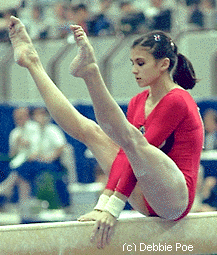

Natalia Yurchenko (USSR)
1982 World Cup AA Champion
1983 World AA Champion

|
Medal Total
- World Championships: 3
Gold
- World Cup:
3 Gold, 1 Silver
|
Natalia was born on January 26, 1965 in Norilsk,
a city located above the Arctic Circle. A first-grade classmate, Katya
Borominskaya, attended a gymnastics class and often spoke about it. One
day, Natalia attended a class with Katya. Coach Galina Khasanova invited
Natalia to join her group.
In summer 1977, Khasanova took Natalia on
vacation to Leselidze. While there, the two met Vladislav Rastorotsky
(coach of Ludmila Turischeva). He invited
Yurchenko to train with him in Rostov. Khasanova sent Natalia's mother a
telegram; Mrs. Yurchenko demanded that her daughter return home
immediately. Khasanova wrote Mrs. Yurchenko a letter, and then the two had
a long telephone conversation. Mrs. Yurchenko finally relented -- Natalia
went to train in Rostov.
Natalia was the first to perform a Korbut loop on beam, the first to do a layout
mount on beam, and was the first female to perform the round-off entry
vault. She is married to former Soviet soccer star Igor Sklyarov and has
a daughter, Olga. Natalia and her husband live in the Chicago area where she runs the C.I.T.Y. Gymnastics Academy. Visit her website
for photos and news.
-
- Competition Results
-
- 1978
- Jr. Friendship Tournament (Druzhba): 1st Team,
5th AA, 1st UB, 2nd V
- Riga International: 3rd FX
-
- 1979
RSFSR Championships: 1st AA, 1st V, 1st FX
USSR Championships: 11th AA, 5th B, 8th UB
- USSR Cup: 4th AA
- USSR Spartakiade: 1st Team, 13th AA, 3rd B
-
- 1981
- Dynamo Spartakiade: 1st Team, 4th AA, 1st V,
1st FX
Schoolchildren's Spartakiade: 4th Team, 6th AA, 1st FX,
5th B
- USSR Championships: 1st AA
- USSR Cup: 4th AA, 2nd B
-
- 1982
- Moscow News: 1st AA, 1st V, 1st UB, 1st B
- USGF International Invitational: 4th Team, 4th AA, 5th UB,
5th B, 5th FX
- USSR Championships: 1st AA, 1st V,
1st UB, 1st FX, 5th B
- USSR Cup: 1st AA, 1st UB
- World Cup: 1st AA, 1st V, 1st B, 2nd UB,
4th FX
-
- 1983
- East Bloc Spartakiade: 1st AA
- European Championships: 9th AA, 4th B, 4th FX
- Moscow News: 1st AA, 1st B, 2nd V
- University Games: 1st Team, 1st AA, 1st V, 1st UB, 1st B
USSR Championships: 1st AA, 1st V, 1st UB, 1st B, 2nd FX
- World Championships: 1st Team, 1st AA, 8th
V
-
- 1984
- CSSR Spartakiade (Olomouc): 1st Team, 5th AA, 1st V, 2nd UB
RSFSR Championships: 1st AA
USSR Cup: 4th AA
-
- 1985
- Australian Games: 2nd AA, 2nd UB, 3rd V, 3rd B, 3rd FX
- European Championships: 10th AA
RSFSR Championships: 1st AA
- University Games: 1st Team, 1st AA, 1st UB, 1st FX, 2nd V,
7th B
USSR Championships: 3rd AA
USSR Cup: 4th AA
- World Championships: 1st Team, 6th AA, 6th
V, 6th B
- World Cup: 10th AA
-
- 1986
- Chunichi Cup: 6th AA, 1st FX, 6th UB, 8th V
- Tokyo Cup: 1st B, 2nd UB
- World Cup: 10th AA
- World Sports Fair: 3rd AA, 4th V, 4th UB
-
- 1991
- World Professional Championships: 4th V, 7th B
-
This page was created on January 25, 1998 and was
last updated on May 15, 2026.
© Gymn Forum